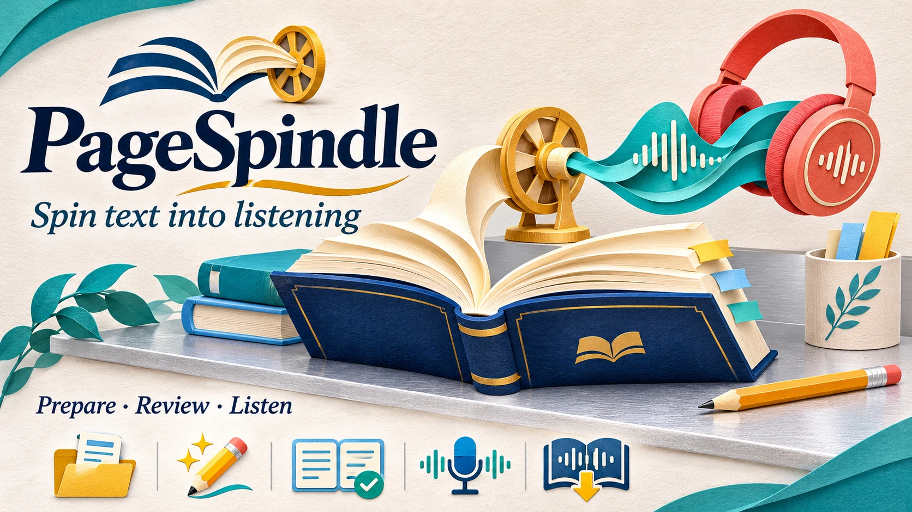

From your page to your headphones.
A local-first Go app for turning authorized text into a listening edition. Bring your text, use an optional local model to propose cleanup, review the changes, and create chapter audio on your computer.
The app opens its workspace in your browser, served by the downloaded Go executable on your own machine. Text preparation and narration use local engines; the website is a download and information page.
Choose your downloadOpen full-resolution splash artworkKeep the author’s words in view.
Bring your text
Paste text or open a supported local file.

Prepare
Ask the local model for a conservative cleanup proposal.

Review
Compare the original, edit the result, and choose where notes belong.
Listen
Preview the included English narration voice.

Save
Export chapter audio and retain a reusable text master.
Downloads
Application packages are being prepared. This page shows the PageSpindle artwork and intended workflow. Download links will be added after the packaged checks are complete.
The common model pack contains Qwen3-1.7B and the narration voice. It is separate from the platform app so you can reuse the same model files across computers. After the matching runtime and model pack are installed, processing does not require an internet connection. Hardware, operating-system, and testing details will accompany each package.
Four protections before sharing.
PageSpindle follows VCC’s design/accessibility, education/privacy, security, and recoverable-delivery guidance, plus Go App Builder. The app preserves original text, asks for review before narration, uses a private local session, and provides explicit project backups. Tests and known limits are documented with the source; a passing build is not certification or school approval.
A workflow with credit.
The text-preparation workflow is adapted from Lance Eaton’s Book to Audio Edition, introduced in AI Audiobooks: An Update and shared in his MIT-licensed repository. Miguel Guhlin adapted it for VCC and PageSpindle. No endorsement by Eaton is implied.
Only process material you are authorized to use. Model and software licenses do not grant rights to distribute somebody else’s book. Student or sensitive records require the responsible institution’s authorization.